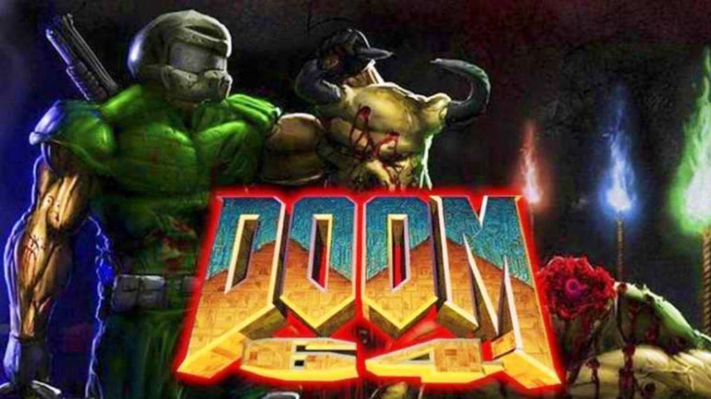

The first Doom was released in 1993 and was revolutionary for its time.
Both Doom I and Doom II are very similar in design and gameplay, almost the same even.
Story (brief synopsis)
After being dishonorably discharged for defending innocent civilians, the Doom Guy is dishonorably discharged
to Mars to work as security for a company called the Union Aerospace Corporation (UAC). While there, a rift into
hell breaks open which causes demonic creatures to emerge from hell and start invading Mars. This happens on Earth
as well. We follow the Doom Guy as he fights to get out of Mars and back to his family on Earth. This game ends with
the Doom Guy beating the Spider Mastermind.
The story of Doom II follows our protagonist on Earth, fighting demons so all the other humans can escape the planet.
After helping out the populatin of Earth, the protagonist is informed about the source of this demonic invasion, which
stems from Mars. Doomguy then goes to Mars to stop said invasion from inside the rift. This ends in defeating a demon
named "The Icon of Sin". After which the Doom marine or Doomguy escapes back to Earth
The ending of Doom II.

As you can probably tell from the name, this game was released in 1997 for the Nintendo 64.
This game is just like a better and more advanced version of the first two games and it looks really nice.
Story (brief synopsis)
Following the Doom Marine's success at thwarting Hell in Doom, Doom II: Hell on Earth, and in the Final Doom storyline,
a quarantine is established on the U.A.C. research installations with apocalyptic levels of radiation. For years, the
installations stood abandoned, until a barely-functioning satellite monitoring one of them sends a message back to Earth.
This message indicates that a "single entity with vast rejuvenation powers" was masked by the radiation and escaped detection.
The entity was able to resurrect the demons by altering "decaying dead carnage back into corrupted living tissue". As the
only experienced survivor of the Doom episodes, the Marine is sent in alone to exterminate them. However, the Marine realizes
the demons have planned to lure him back into Hell. They are nonetheless unable to defeat him, and with the Unmaker, he
eventually battles and kills the Mother Demon. The game ends with the Marine, no longer capable of having a normal life
following his encounters with Hell's forces, deciding to remain in Hell forever to ensure no demon ever rises again. In
the Lost Levels from the 2020 remaster, the story continues as the Mother Demon was revealed to have a sister called the
"Resurrector". It banishes the Marine back to a UAC base, forcing him to fight his way back to Hell to stop the Demons.

A really fast speedrun of the PC edition of the game!